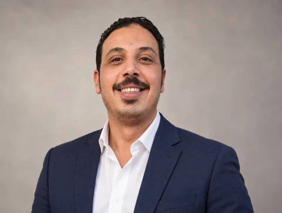

10 → 3
Working days to report submission
A faster close and reporting cycle
Explore the case ↓I’m Mahmoud Elsherbiny, a finance and accounting leader with 16+ years across Saudi Arabia and Egypt in manufacturing, construction, furniture and financial systems. I connect reporting, analysis, planning and cash flow with better business decisions.

My work brings together financial accounting, management reporting, financial analysis, budgeting, cash flow, internal controls and ERP implementation. My specialist experience includes manufacturing and project costing and profitability analysis, supporting decisions across sectors.
At Hot Plate Factory, my responsibilities span accounting, reporting, costing and financial controls—working with operations to build reliable data, improve efficiency and connect manufacturing with accounting through Odoo ERP.
I lead a four-person team covering general accounting, receivables, inventory, and cash and banking. I design close and reconciliation plans, assign responsibilities, and review and approve entries and reconciliations within delegated authority, escalating exceptions to the Finance Director.
Cases from my manufacturing and construction experience, shared through percentages and durations with organization names and financial amounts withheld, and with my role and measurement context explained.
A faster close and reporting cycle
Explore the case ↓Connecting manufacturing and finance
Explore the case ↓Turning product costing into operational action
Explore the case ↓Anticipating a cash shortfall
Explore the case ↓Bank reconciliations were delayed, with no clear close schedule, task ownership or completion tracking.
I designed a close calendar and checklist with task owners, deadlines and completion status, then supervised delivery. The team performed the entries and reconciliations.
Across three consecutive monthly closes, the cycle fell from 10 to 5 and then 3 working days: two for entries and reconciliations, with the third for the trial balance, reporting and submission to the Finance Director for review.
The process remains in use, with exceptional cycles taking up to 5 days, for example when a bank statement arrives late. The metric ends at report submission for review, rather than final approval.
The legacy setup lacked a clear manufacturing and product-costing cycle. Independent Excel recalculations exposed inventory valuation and cost-of-sales discrepancies.
I led requirements, partner negotiation, financial configuration, multi-warehouse and manufacturing setup, data preparation and opening balances. The partner supported specialist technical work while I owned the finance implementation.
Purchasing, inventory, manufacturing, sales and accounting were connected within 9 months. A full year of transactions was recreated in parallel, reaching same-day entry across both systems.
Transaction records were matched; costing results changed as the costing system was introduced. Product costs, production reporting and contribution margins became available. The original discrepancy was not conclusively attributed to software or configuration.
Aggregated production costing concealed high-scrap products within the overall mix, obscuring the product-level problem.
I built product-level cost analysis using historical records and traced scrap costs to the affected product. I recommended a mold redesign and followed implementation; technical specialists handled design, manufacture and installation.
Scrap per operating hour fell 70% with broadly comparable product and operating conditions. Mold delivery and installation took approximately 3 months, with the benefit sustained through the redesigned mold.
Product weight also changed, so the total unit-cost difference cannot be attributed solely to scrap reduction. Labor and expense savings are not presented as verified efficiency percentages.
The monthly plan did not capture the first quarterly installment of a new loan alongside tax and payroll commitments, creating a prospective cash shortfall.
I rebuilt a rolling 45–90-day cash budget, assessed alternatives and negotiated a 2% discount with a customer for settlement within 10 days, within my delegated authority.
The collection covered the shortfall, with funds in the account 25 days before the cash requirement.
The outcome reflects this case and its available alternatives. The discount is not an annualized financing rate or a claim of being the cheapest option in every circumstance.
Results reflect my professional experience and internal measurements. Source records and operating data are not published to preserve confidentiality.
From a management question to the numbers and interpretation. Explore analysis, planning, costing and controls.
Two source projects: the monthly performance dashboard and a Finance Portfolio with four related work areas. All displayed figures are synthetic portfolio data.
Monthly revenue, margin, cash flow and budget analysis. Select a year and month, then explore the detail.
Explore dashboard ↗FY2026 versus FY2025: profitability, liquidity, working capital and earnings-to-cash conversion.
Read the analysis ↗A variance table connecting revenue, cost of sales and operating expenses to operating profit, with clear favorable/unfavorable treatment.
Review variances ↗Compare contribution margin and operating profit across four products. Select a product to inspect pricing, cost structure and profitability.
Explore products ↗An illustrative review of six financial processes: risks, existing controls, recommendations and ownership. Filter by risk level.
Explore assessment ↗Source workbooks are available within each project. Product and control work samples belong to the same Finance Portfolio workbook.
Connected disciplines, because profitability, liquidity and data quality belong in the same conversation.
Reliable reporting, disciplined closing and a clear view of performance to support management decisions.
Product costing, variance analysis and product profitability grounded in operational cost drivers.
Cash flow planning and oversight of inventory, receivables and payables to understand operating liquidity.
Operationally grounded budgets and forecasts, turning performance variances into practical actions.
Financial controls, external audit support, and oversight of VAT and Zakat compliance.
Odoo ERP implementation and configuration, connecting manufacturing and accounting while developing people and processes.
Alongside my practical experience, studying CMA topics has strengthened my knowledge of management accounting and financial management, connecting analysis, planning and the evaluation of alternatives.
Passed the Part 1 examination.
Continuing preparation for Part 2.
Bachelor of Commerce in Accounting, Mansoura University, 2009. CMA Part 1 passed; Part 2 in progress. Certification is not yet complete.
More than 16 years across Saudi Arabia and Egypt, spanning manufacturing, projects and financial systems.
MANUFACTURING · PROJECTS · ERPAccounting, reporting, costing and controls leadership; Odoo implementation connecting finance and manufacturing.
Financial reporting, budgeting, project costs, working capital and cash flow management.
Planning, reporting, financial analysis, production and inventory reporting, and controls.
Project accounting and costing, receivables, payables, profitability and cash flow reporting.
Financial statements, budgets, management reporting, reconciliations and cash flow oversight.
System configuration and accountant training in general ledger, inventory, fixed assets and data validation.
“The numbers start the conversation.#MElsherbiny
The decision gives it value.”
On LinkedIn, I share perspectives on financial analysis and manufacturing finance, exploring profitability, liquidity, and financial and operational trade-offs.
Explore my LinkedIn↗I welcome conversations about finance leadership, costing, systems improvement and professional experience.